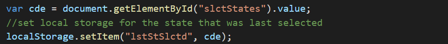
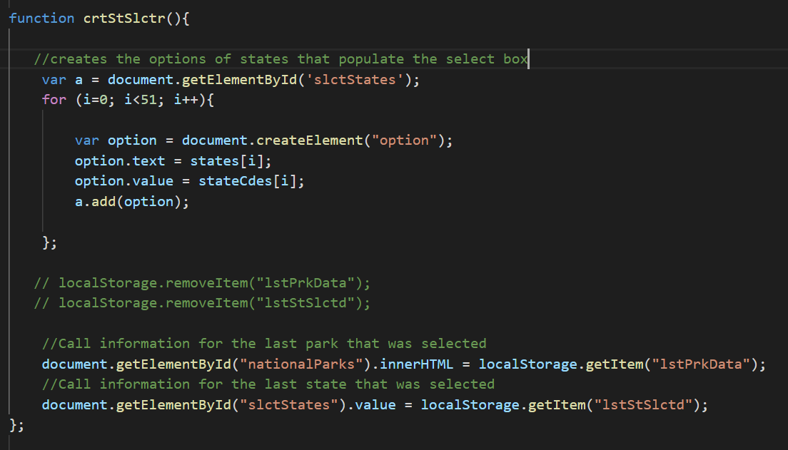

This next set of code will apply session and local storage to the website that uses the national park services API. Now, when the user runs a search, the search information from the API will also be stored within local storage. That way, if the user leaves the website and then comes back, the website will display their previous search results. Both the select box and the div below will have the information stored. This will allow the select box to show the state that was last selected and it will show the national park information for the state that was last selected. This information is stored into local storage each time the person presses the 'View the National Parks' button and calls the functions associated with this button. The code below shows the javascript that is called to store the local storage.
The next set of code displays this information on the onload of the webpage. This code is embedded within a function that runs at the time the website loads, thus displaying the last search that was made when the website first opens. This code is found at the bottom of the image below. It occurs after all of the options for the select box have been created.
Lastly we will look at the session storage. In this the code will display a counter for everytime that the user performs a search in a particular session. Since the count is stored in session storage, the count starts new when a new session is oppened. This code is also embedded within a function that is called when the user presses the 'View the National Parks' button. See this code below.
It will take a few moments to load the data when selecting a park.